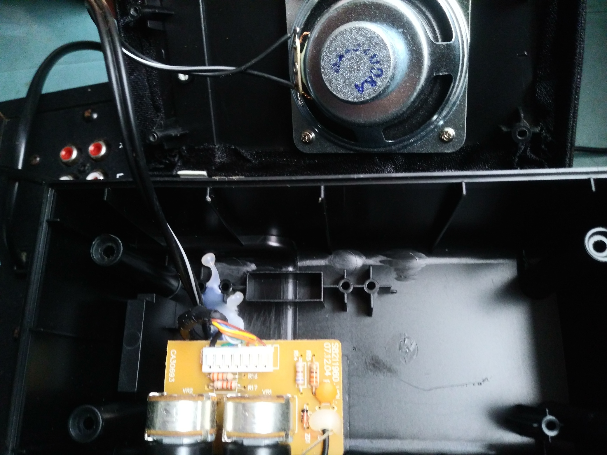
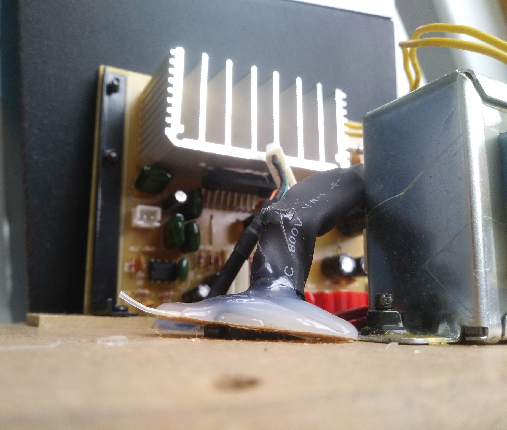
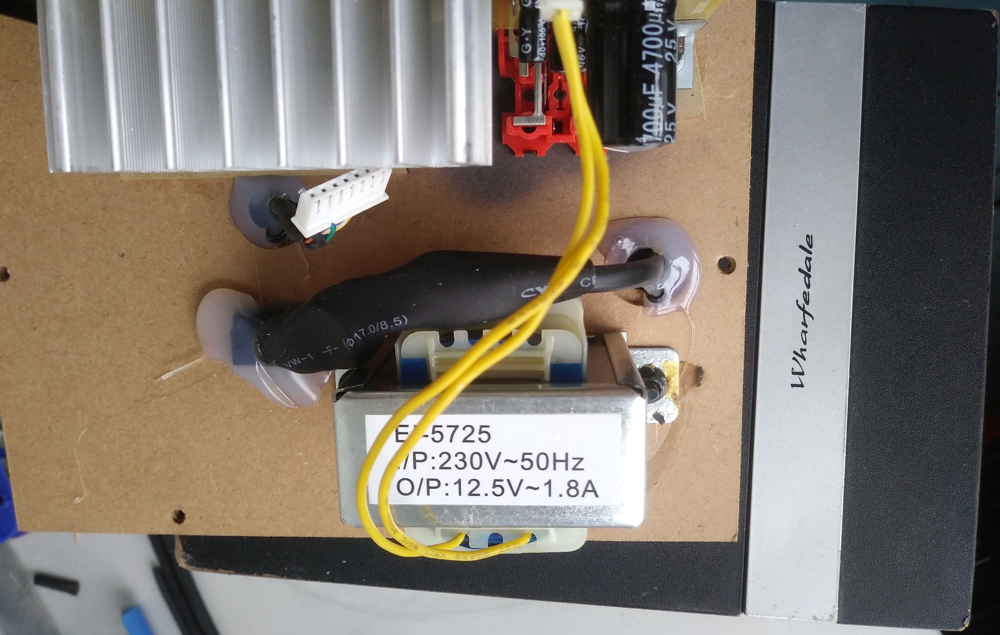
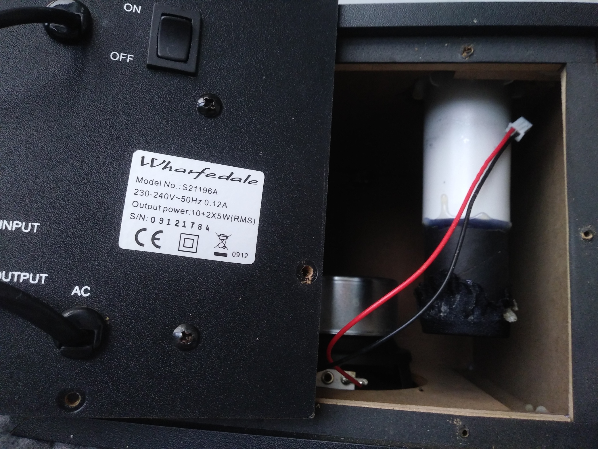
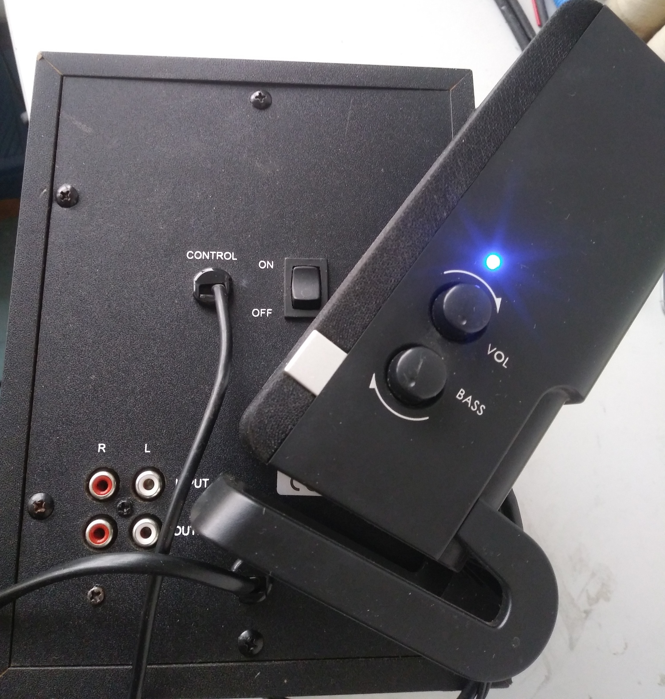
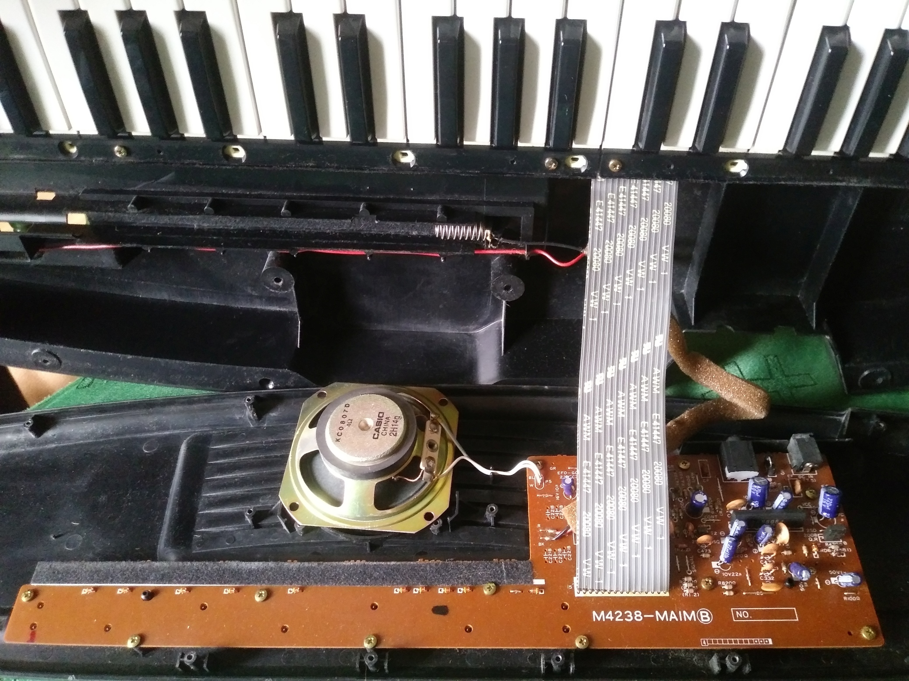
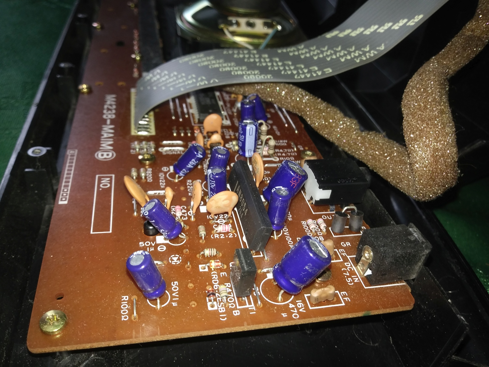
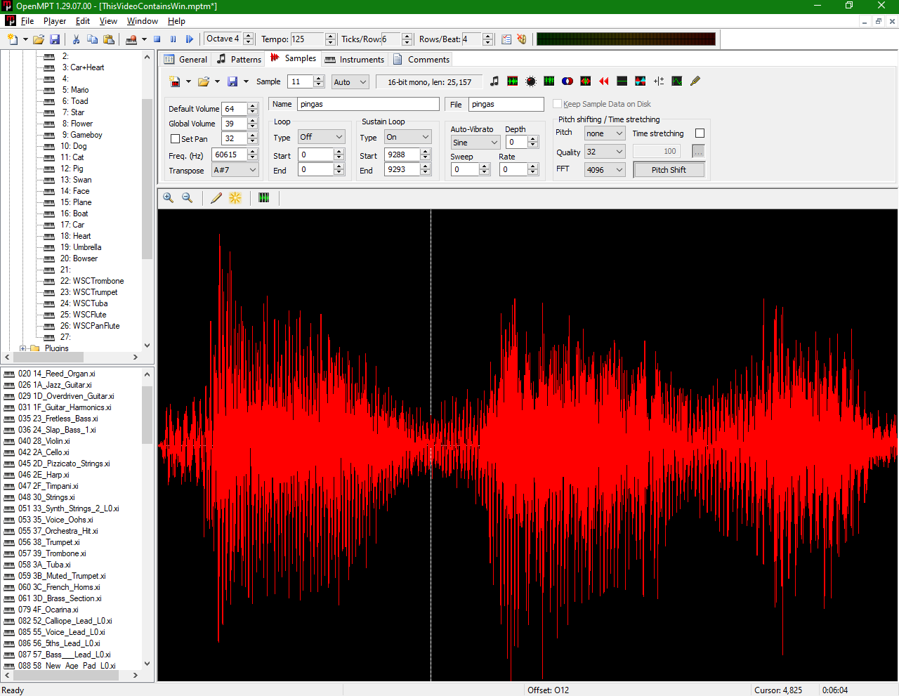

In memory of grandfather Janusz S³awiñski who introduced me to electrical repairs, and Jan Kosior – his grandfather – the pipe organist in Lubartów.
► Shure SE112-BT1 earphone diagnosis.
► Research on button accordion simulation.
► Instrumental & vocal music in SoundCloud.
►Soundboards: Video Game Audio Extraction
and Application.
Table of contents:

|
4th May 2021
This 2.1 set of computer entertainment-oriented loudspeakers is counterfeit not only because of feral realization, also due to not existing Wharfedale website treating S21196A. The weakest items are Control cable and the biggest capacitor (25V 4700μF), one within mains rectifier circuit; not to mention overuse of craft glue. I bought the speakers as used for ca. $16 which is a typical price of such products in zachodniopomorskie (Poland), and took 12 photos before repairing. Back then, turning subwoofer on resulted in constant and loud 100Hz hum. Bending a thicker Control cable cannot fix that and resulted in taking signal away from LED power indicator besides variation in humming. Hopefully, such repair ought to be easy due to straightforward causes.
After removing screws and so on, the former had invisibly broken wires inside which power a blue LED etc. The latter bulged up as usual, naturally because came here called Jakec. Replacing a faulty capacitor with low-ESR nichicon characterized by similar values (25V 3300μF) led to half of the task and should also extend the loudspeakers' life due to Japanese origin of next capacitor. It is a fair guess – even better parameters could mute 100Hz hum completely. In order to revive Wharfedale's, the next step was cutting thick cable and soldering its wires to PCB, in points created in a factory to place a single-use (non-replaceable) connector. Alas, an increase in mains rectifier filter by Elna 1000μF (rated 50V) does not reduce hum in satellite speakers, joint with noise created by spikes at 100Hz. Now, the design flaws in this product are perceived easily, because this certain problem lies in amplification control.
After all, while original satellites were being replaced repeatedly, this 2.1 system needed an hour of working at high bass and volume settings, before 100Hz hum calmed down almost completely. Apparently, this time interval can extend to two hours due to changes in power supply's load. Notice how this product is based on obsolete design technology with voltage transformer, but surprisingly needed kind of abovementioned warm-up time despite not using thermionic valves. The satellite speakers of a small diamater compared to the subwoofer are prone to high harmonics generated along with rectified 100Hz hum. A good replacement satellite speaker is one or two Soundwave 9600CD of bigger diameter and less prone to adding harmonics (full diode-bridge current spikes).

Fig. 1.1: Craft glue holding cables inside right speaker case instead of usual knots in audio equipment.

Fig. 1.2: Craft glue holding AC switch torn away some area of fiberboard inside subwoofer.

Fig. 1.3: Bulged rectifier filter capacitor. Notable dark spot around RCA sockets.

Fig. 1.4: Subwoofer port glued, nevertheless able to rotate.

Fig. 1.5: Power indicator blinking at random. This phenomenon was independent of Output RCA plugged or not, because their cables carry signal straight to satellites from an amplifier circuit inside subwoofer.
External resources:
Links to text about Jakec capacitors such as one used to manufacture Wharfedale loudspeakers.
Replacement nichicon capacitors (also contained in Sony KV-21FQ10B).
5th June, 16th August 2021
Due to the need of short and lightweight piano-like synthesizer, I bought Casio MA-130 on 2nd May 2021 for ca. $7 (batteries included), it is 695mm long, 240mm wide and 85mm tall. A somewhat rare feature implemented in its 76 Cosmic Dance preset is playing one clip on a key press and another on its release. This is possible to reproduce within a complex musical environment like OpenMPT; if one manages to set up a silent Sustain Loop between two clips of a chosen sample.
Casio MA-120 similar to the 130 is characterised by Out minijack impedance nominally 100Ω, therefore use of 32Ω stereo headphones (or other low-impedance load) is prohibited: I have perceived a side-effect called dither at every MA-130 loudness levels. It is an useful white noise added to audible output of a digital-analog converter which usually aids very quiet portions of electrical sound. This kind of dither is absent at Out minijack load impedance of 100Ω and higher such as Creative A200 2.1 loudspeaker system.
The main disadvantage of the keyboard is hard pressing black keys near the instrument case. This is due to the keyboard actually consits of two combs: one of white keys and the second of black ones. Shafts of both combs were stacked-up in order to be mounted inside the case; such assembly is shown on the photograph 2.1. All this makes playing musical scales with sharps or flats more difficult than with Casio CTK series instruments, whose keyboards were built with hinges under the case. Both CTK-451 and -230 utilize a sound synthesis chip able to produce timbres much more resembling their names: 08 Harpsicord, 14 Church Organ and so on. The CTK-451 keyboard surely is equipped with MIDI sockets absent in small Casio MA-130.
Moreover, a preset 03 Harpsicord sounds slightly unpleasant when its pitch is around b5 (German hII) given that center key has pitch c4 (cI). Due to simple interpolation technique used in PCM waveform resampling, the phenomenon known as aliasing occurs. It is possible to reproduce this effect inside OpenMPT, in a file with 1 tap resampling, with an aid of a triangle wave captured from an 8-bit console such as Nintendo Entertainment System.
Under a metal sheet with fifteen screws fitted in plastic case of the instrument, Casio used to hide PCB for the keys, in such small and bigger pianos without keypress velocity-response. Because this particular instrument with batteries weighs only 5lbs (2.3kg), any strap or belt could let it hang on the musician's shoulders. I have chosen a strap with the ability to open the loops on its ends, therefore two out of fifteen screws had to be replaced with longer ones. Finally, the piano will be played in a similar manner as these monophonic analog synthesizers linked below:
► CTK-230 and CTK-451 SoundFont by Dekyo Ongen.

Fig. 2.1: The synthesizer was being cleaned of dust after opening its case. The frail speaker diaphragm should not be touched because its rim is very brittle now.

Fig. 2.2: A close-up view on THT components' verbose onboard labels along with Output minijack next to DC 7.5V input.
External resources:
Casio MA-120 Operation manual along with electrical specifications.
An article regarding many more and different traits of our synthesizer.
6th June 2021
The family of software named ModPlug is derived from the Trackers, an entire nation of programs which is being used for music production under many computer generations: ZX Spectrum 48K, Atari ST, Commodore Amiga, IBM PC and so on. The part Mod is associated with modules, that is in short a file format analoguous to a video-edition project, which is also an A/V container: AVI, MOV, MKV, WMV, 3GP, MP4, OGG etc. The aforementioned music modules could be tied to chip (Chiptune) music niche, fortunately nowadays this is not the same. To be honest, the straightforward popular use of MIDI (Karaoke files) with digital keyboards puts much more constraints on automated music playback and live performance compared to modern applications like OpenMPT.
The OpenMPT is a portable application for Windows, a feature-rich musical environment targeted to sample table-based performance and composing. An user gets an opportunity to insert here any sounds (eg. human voice), choose its fragment for continuous playback (AKA loop) or not. Under that reasoning, a two-syllable word could be divided in two parts given that a short portion of samples are silent in between. Choosing five samples as a Sustain loop allowed me to obtain this kind of sample playback under following sound engine conditions: DirectSound - Primary Sound Driver (PortAudio), Latency 2ms, Period 25ms, Format 44100Hz Stereo. Alas, choosing less than five samples resulted in unpredictable behaviour, as the second sound clip could not be played independent of a pressed key's pitch. As a side note, a preset known as Cosmic Dance built in Casio MA-130 works in a simillar manner as this application of Sustain loop, that is two different sound clips are played depending on a key event.
Another noteworthy application of the OpenMPT is drum machine. After composition or acquisition of a Mod containing percussion patterns, the musician can edit them further or just start their playback as a background for live performance. Using a computer keyboard to play music is far too uncomfortable compared to a MIDI controller, therefore a patient setup of environment is required. Within any module file already full of music, choosing the Instruments tab and single click of Play from Start (F6 key) converts the software to an automated synthesizer. The Internet is already generous with modules in a plethora of formats which can be opened and edited within OpenMPT. A non-exhaustive list of these Tracker file extensions: far (Farandoyle), it (Impulse Tracker), mdr (Compressed ModPlug), mod (ProTracker), s3m (ScreamTracker), xm (FastTracker). If user decides to create a most powerful or versatile kind of module, MPTM file extension is the best choice. Instrument file names extracted from various Tracker modules end with corresponding extensions, eg. xi (FastTracker Instrument). However, saving Instruments after creation of MPTM suggests ITI (Compressed Impulse Tracker Instruments) extension by default, due to OpenMPT not having its own instrument file format.
Thanks to OpenMPT, a musician can hear and extract SoundFont SF2 instrument banks, but cannot modify or create such files. Such basic support for SF2 files does not imply a lot of its outstanding traits, for example switching between instrument sound clips depending on keypress speed (MIDI note velocity); lack of this reduces the reality in reproducing instruments like acoustic grand piano, whose timbre changes depending on keypress velocity. Nevertheless, because free SF2 banks available on the Internet can exceed 1GB in size, it is likely a consious composer will take the advantage even of the smaller files but still containing all standard musical instruments and percussion.
My screenshot (3.1 below) could be read downwards in sections from upper left: the typical File etc. menus are intended rather for occasional setup. More interesting buttons like Play from Start (F6 key) are provided near Help menu along with the keyboard input transposition slider Octave 4. These are essential for playing music with keyboards such as MIDI controllers. A first long box is presenting instruments (tone presets) within current MPTM file now, but also whole tree structure of the file. In fact, presets 3-20 come from a video game called Mario Paint Composer, with modifications. A box below serves a purpose of simplified disk explorer (AKA file manager), showing some other instruments based on sounds from OPL4 by Yamaha. The rest of on-screen boxes and controls are shipped with labels or their usage can be learnt from the software manual.
► OpenMPT-ready experimental FM synth-orchestra: a 7.4MB MPTM.
► Original samples in a SoundFont by The Eighth Bit – Cinos Modnar.
► Presets based on OPL4 (YMF278B system) by Yamaha: a 3.7MB MPTM.

Fig. 3.1: A two-syllable word split in two keyboard events: press and release.
External resources:
10th July 2021
I have been using Sound Exchange since 2017 after trying similar audio-video tools such as FFMPEG, Handbrake, VirtualDub and AviSynth. The first one is the main topic of this article, because the rest had a cameo role in my life. Both Sound Exchange (SoX) and FFMPEG are command-line utilities, nevertheless SoX is more straightforward and suits my needs better. The same utility allows sound playback, capture and processing, based on text commands or batch scripts. Two former can be started more conveniently after sox.exe has been copied as play.exe and rec.exe, therefore another applications should execute chosen type of SoX. The latency in opening uncompressed sound with play.exe is negligible, given that default output of a sound card is properly configured.
Sound Exchange is also quick in transcoding multiple files, eg. MP3 to WAV. A link below this paragraph presents a process of replacing certain sound effects in Super Mario War 2.0 with Super Mario Bros. X, simply put. Both applications have main concepts rooted in 1993 game Super Mario Bros. 3 by Nintendo. Nowadays, that SMW2 can be called a fork of the clone of original Mario War created in Pascal for MS-DOS in 2002, by Italian Samuele Poletto (also known as S. Poletti). Two years later, Florian Hufsky et al. reproduced this game for MS Windows (firstly for x86 machines, like Windows XP) with voices from Quake 3 and for other gaming platforms, eg. Xbox. Alas, after 2010 the Super Mario War developers stopped at version 1.8 beta 2.
► Report from Super Mario War 2.0 modification.
Back then in 2004, the 1.10 version of game was using MP3-compressed sound file format and player sprites in BMP files without compression. Each frame of a sprite existed in separate bitmap files with magenta background (exactly #FF00FF). This is an analogy to chroma key compositing in movie post-production, where a person standing in front of green or blue screen could be easily placed in a different scenery. The more widespread installments of Super Mario War such as 1.7 and newer take advantage of uncompressed WAV sound files and music in OGG Vorbis-coded format. The separate pictures of animated objects are stored together in BMP files, side by side. Moreover, the player sprites allow around twenty-four additional kinds of special colors (including shades) changed by the game engine in about nine various situations and character modes. For example, normally 25% magenta #400040 in sprite file changes to 25% gray #808080 in gameplay; 50% magenta #800080 to 50% gray #808080; 75% magenta #C000C0 to 75% gray #C0C0C0. Many other exchanges are too complicated to explain without citing the game rules.
► Super Mario War 1.10 with additional executable for Windows x64 (eg. 8.1)
Here one can obtain the game built on 8th June 2021 with enhanced sound effects and Readme.html, or a more recent build depending on a link chosen from below. This mirror of the game by Mátyás Mustoha besides small improvements by qvx.cba.pl, could still be expanded easily by adding player skins and changes in user interface graphics. Usually, these modifications are collected in packs which can be switched back and forth. Fortunately, the source code of version 1.8 beta 2 has been revived in 2014 by Hungarian Mátyás Mustoha, along with player skin and map repository (lesser than one I can remind from 2011). Even a Javascript-edition of SMW2 is here: Super Mario War (in orange) › ...or play in your browser (below Get the game). However, SMBX with 2-player battles – another game based on Super Mario Bros. All-Stars – contains sounds of higher quality than these shipped with official SMW 2.0. Hence, the opportunity of replacing them easily led me to reccomending this stand-alone open-source game (as is).
► Super Mario War 2.0 for Windows x64 (eg. 8.1)

Fig. 4.1: My unfinished computer game with invisible sound engine written in C++/CLI 2008 and graphics thanks to WinForms.

Fig. 4.2: Super Mario War 1.10 running under Windows 8.1 (6.3.9600 x64). Nota bene surname spelled Poletti.

Fig. 4.3: Super Mario War 1.7 palette, simply put: shades of special colors in columns and character modes in rows.

Fig. 4.4: Two different player skins by 4matsy et al. representing a part of chroma color keying technique in the game.
External resources:
©
2021 Krystian Sławiński
All
rights reserved. All other trademarks are the property of their
respective owners.